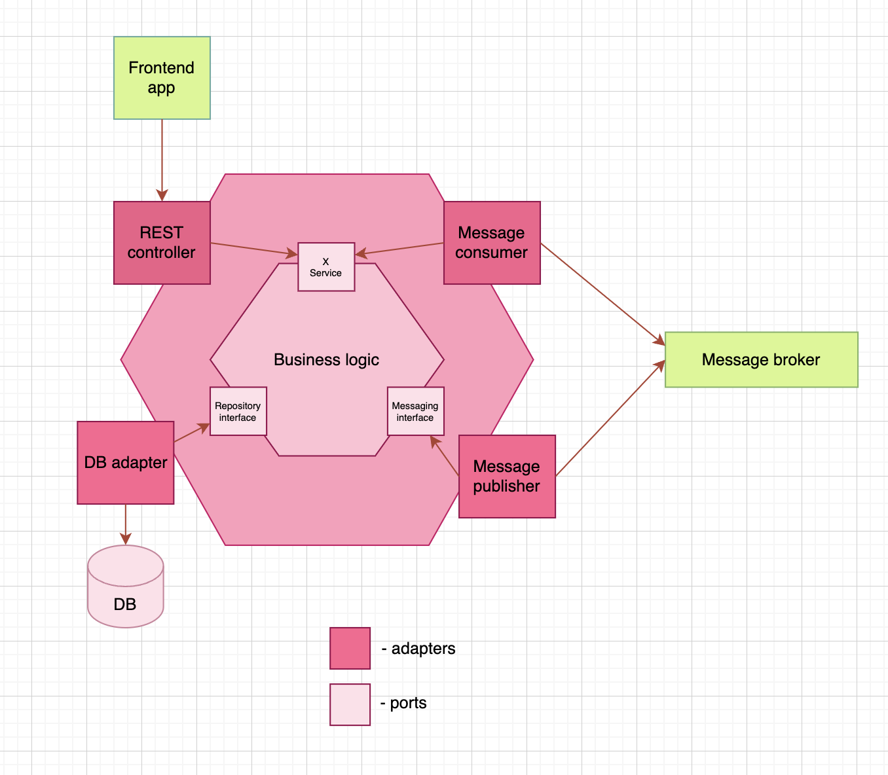
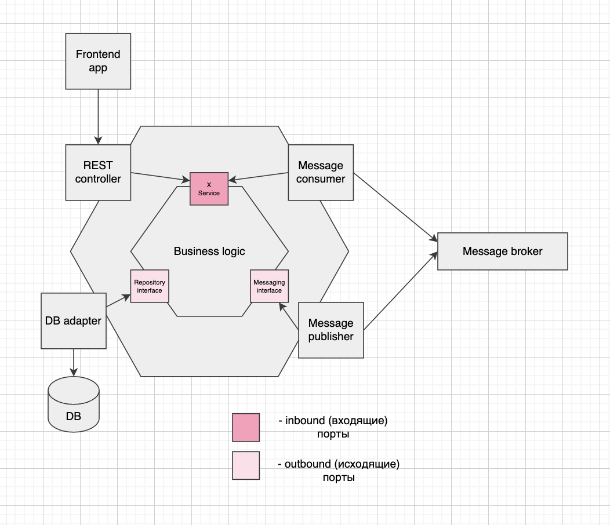
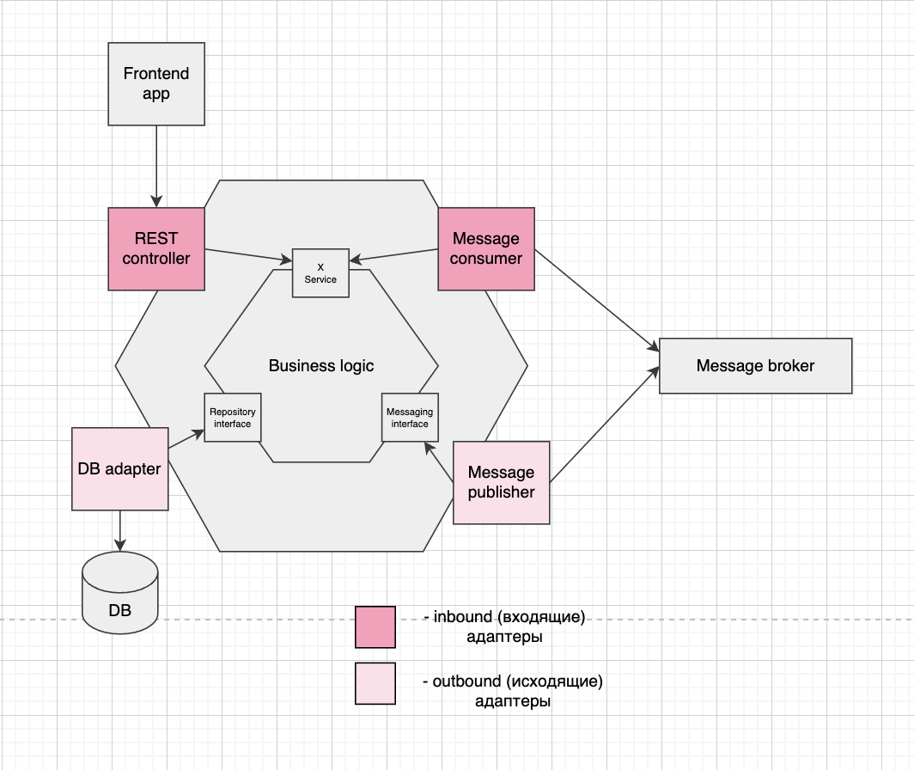

🎀 Hexagonal Architecture
Основная особенность: бизнес логика - центр приложения. Она связывается с окружающим миром с помощью адаптеров и портов.

Порт определяет как бизнес логика взаимодействует с внешним миром, а адаптер - как с внешним миром взаимодействует все приложение целиком.
˚˖𓍢🌷✧˚.🎀⋆ Порты ˚˖𓍢🌷✧˚.🎀⋆
Порты разделяются на входящие (inbound) и исходящие (outbound).
Входящие порты - доступное API, которое предоставляет бизнес логика. (e.g. public методы интерфейса сервиса)
Исходящие порты позволяют бизнес-логике вызывать внешние системы. (e.g. интерфейс репозитория)

˚˖𓍢🌷✧˚.🎀⋆ Адаптеры ˚˖𓍢🌷✧˚.🎀⋆
Ровно как и порты, адаптеры разделяются на входящие (inbound) и исходящие (outbound).
Входящие адаптеры обрабатывают сигналы извне и вызывают бизнес-методы через входящие порты. (e.g. REST контроллеры, consumer-ы)
Исходящие адаптеры наоборот вызываются бизнес-методами через исходящие порты и обращаются к внешним приложениям. (e.g. publisher-ы, реализация интерфейса репозитория, прокси класс для внешних вызовов)

Получается, имеют место такие цепочки взаимодействий:
- внешнее приложение -> входящий адаптер -> входящий порт -> бизнес-методы
- бизнес-методы -> исходящий порт -> исходящий адаптер -> внешнее приложение
Разные входящие адаптеры могут обращаться к одному и тому же входящему порту.
˚˖𓍢🌷✧˚.🎀⋆ Нафига, а главное - зачем? ˚˖𓍢🌷✧˚.🎀⋆
Нам нравится, что бизнес-логика отделена адаптерами от внешних взаимодействий, что позволяет:
- облегчить тестирование
- довольно свободно управлять внешними возможностями системы без изменений бизнес-логики -> и именно эта гибкость часто требуется в современных приложениях